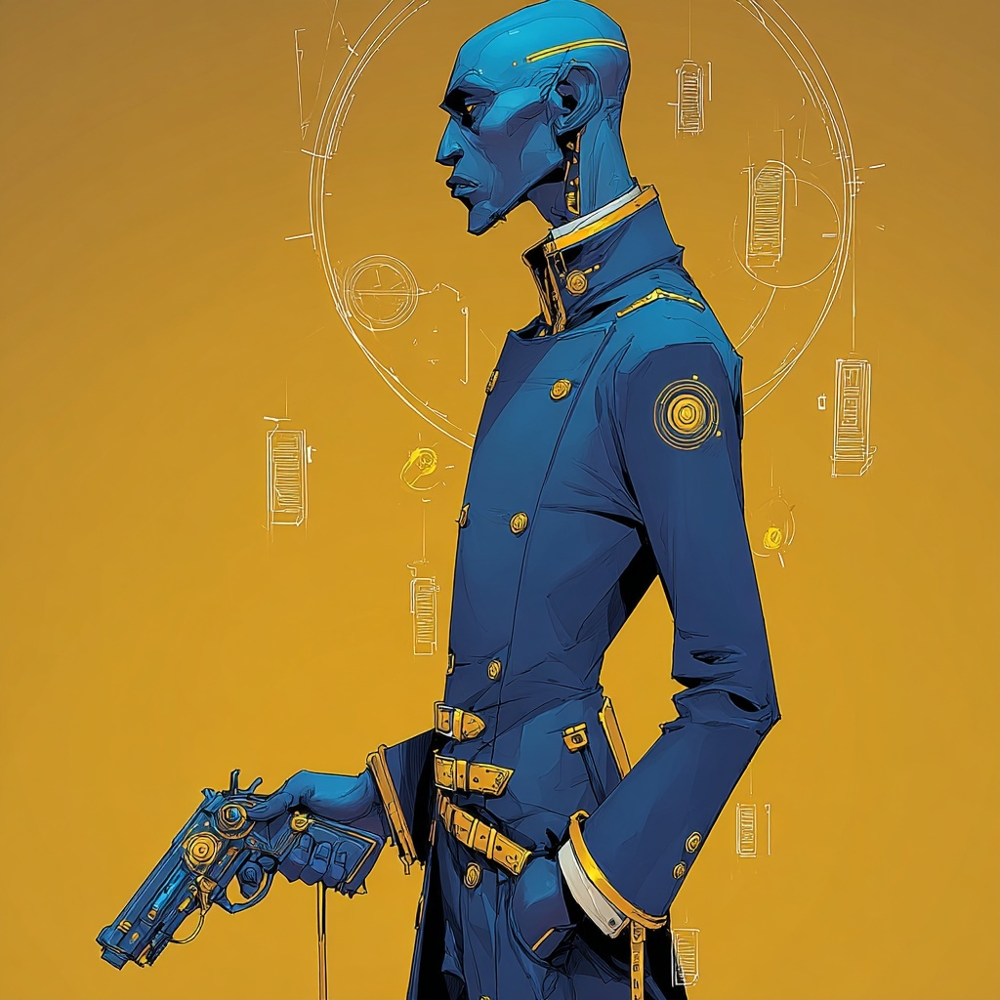

Pure support, debuffer, morale management. The gun is punctuation.
Per Zenith.md, Secretary Nomos is the unit's communications and support operative: pure support, debuffer, morale management. Witty Banter damages an enemy and boosts an ally in a single action. Harsh Critic debuffs targets on the perimeter. Flip the Script repositions the team. He operates from range, firing his sidearm between verbal takedowns — the gun is punctuation.
Per Zenith.md narrative profile: he came to the Office from a world of craftspeople and makers and approaches his work with an artisan's standards — the case should be handled not just correctly but elegantly. Of the four members of Zenith, he is the one most willing to engage with the worldsickness. His Useful Emotion trait channels his feelings directly into his performance. In interrogations, he pairs with Vellpryte: she applies pressure, he reads between the lines.
Culture: Artisan Guild — Urban, Bureaucratic, Creative. Career: Mage's Apprentice. The career description: "For long years, you studied magic under the mentorship of a more experienced mage." It grants him Magic, Culture, and Society skills, a Renown of 1, an additional language, and the Psychic Whisper supernatural perk.
Two peaks at +2 (Agility, Presence) with two secondaries at +1 and one negative. Troubadour abilities use Presence; the Rapid Fire signature uses Agility. Might is irrelevant to his method.
| Stat | Value |
|---|---|
| Speed | 6 — 5 base + 1 kit |
| Disengage | 1 — Rapid Fire kit |
| Ranged Damage Bonus | +2 / +2 / +2 — Rapid Fire kit |
| Ranged Distance | +7 — Rapid Fire kit |
| Renown | 1 — Mage's Apprentice career |
| Wealth | 1 |
Nomos's Heroic Resource is Drama. The exact gain triggers, from the source:
From the resource details (verbatim, partial): "When you are dead, you continue to gain drama during combat as long as your body is intact. If you have 30 drama during the encounter in which you died, you can come back to life with 1 Stamina and 0 drama (no action required)." The +10 trigger when a hero dies makes self-resurrection mechanically meaningful — three heroes' worth of crisis in a single encounter can fuel a return.
Nomos selected four ancestry traits: Systematic Mind, Unphased, Useful Emotion, and I Am Law. The Useful Emotion selection is the one that distinguishes him from the rest of the unit — he is the only member whose trait suite explicitly works with the worldsickness rather than against it.
| Trait |
|---|
| Systematic Mind |
| Unphased — Your ordered mind can't be caught off guard. You can't be made surprised. |
| Useful Emotion |
| I Am Law — Your lawful nature and quick reflexes mean you give no quarter to creatures trying to get past you. Enemies can't move through your space unless you allow them to do so. |
From the subclass description: "You seek drama from story and recount, using your magic to manipulate the sequence of events unfolding before you." The Auteur grants three level-1 abilities in addition to the standard Troubadour class features.
The Troubadour class grants three Performance abilities — passive auras that Nomos can have active. Each is a No Action ability, Aura 2, with the Performance keyword. (The mechanics of how Performances are activated and exchanged are governed by the Troubadour class rules; the descriptions below are direct from the source.)
| Field | Value |
|---|---|
| Armor | Light Armor |
| Weapon | Bow (reflavored per Zenith.md: sidearm) |
| Stamina Bonus | +3 |
| Speed Bonus | +1 |
| Stability | 0 |
| Disengage | +1 |
| Ranged Damage | +2 / +2 / +2 (all tiers) |
| Ranged Distance | +7 |
| Signature Ability | Two Shot |
Per Zenith.md the Rapid Fire kit is reflavored as a sidearm. All numbers are unchanged from the Rapid Fire kit; only the fictional weapon changes from bow to firearm. The "two shots back to back" of Two Shot becomes two rounds rather than two arrows.
From the complication description (verbatim, partial): "You studied in an academy or other educational institution. Your training was thorough and your reading list was wide-ranging. But when you left school, you discovered that there were serious gaps in your education. Maybe some of those books were a little out of date."
| Aspect | Effect |
|---|---|
| Benefit (Skills) | Choose three additional skills. Nomos selected Eavesdrop, Pick Pocket, and Track. |
| Benefit (Language) | You know one dead language of your choice. Nomos selected Mindspeech. |
| Ivory Tower Drawback (verbatim) | The Director chooses one of the skills you learned from this complication. You lose that skill and can't ever learn it again. Additionally, you take a bane on any test to which that skill would apply. |
Mindspeech is the language of the Synliroi (Voiceless Talkers), per the ENCOUNTERS file. They are a Tier 1 existential threat for the Memonek party. Per Zenith.md, Nomos has a missing mentor (his inciting incident), and the narrative profile notes: "his missing mentor — the mage who vanished without explanation — is an unresolved thread that could surface during any case involving arcane disappearances or concealed knowledge." Whether the Mindspeech / missing mage / Synliroi threads are connected is for the Director to decide.
Per Zenith.md: "Nomos is the team member most willing to engage with the worldsickness. Useful Emotion means he channels his feelings directly into his performance. … His relationship with worldsickness is to lean into emotion and weaponize it."
His Drama resource and Useful Emotion ancestry trait are the mechanical expression of this posture. Drama gains include hero-in-distress triggers (a hero made winded; a hero dying); the resource is fueled by stakes.
Per Zenith.md: Nomos's inciting incident is Missing Mage — the mentor who taught him magic vanished without explanation. The thread is left open in source, with the noted suggestion that it could surface during cases involving arcane disappearances or concealed knowledge.
Per Zenith.md: "He knows how to hide things, which means he knows how to find them." His Ivory Tower skills — Eavesdrop, Pick Pocket, Track — and the Conceal Object class skill all support investigation that doesn't rely on official channels. He is equipped to look for his mentor if and when the campaign points him toward a search.
Per Zenith.md: "In interrogations, he pairs with Vellpryte: she applies pressure, he reads between the lines." His role is pure support — Witty Banter coordinates damage and ally relief in a single action, Harsh Critic shuts down enemy tier effects, Flip the Script repositions the team. Per Zenith.md: "Nomos defaults to making everyone else better."
From Zenith.md: "His missing mentor, his artisan's need for elegance in a brutal job, and the growing gap between his education and his experience."
The three threads correspond to specific features in the sheet. The missing mentor is the inciting incident. The artisan's need for elegance is anchored in the Artisan Guild culture. The growing gap between education and experience is the Ivory Tower complication — pending the Director's choice of which skill to remove and bane.